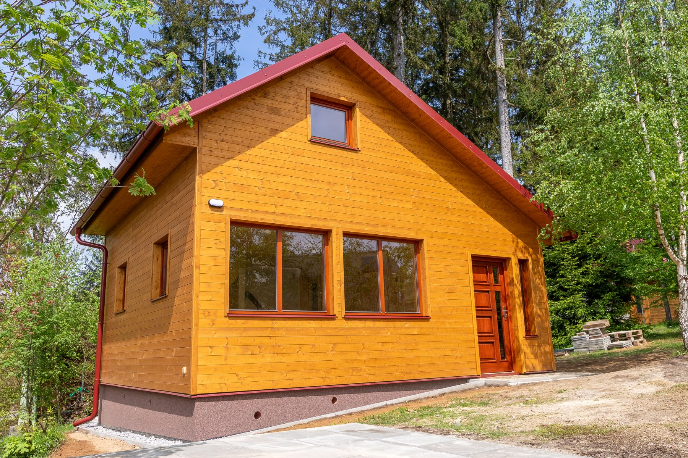

Krovy a nosné konstrukce
Nové krovy, úpravy i rekonstrukce s respektem k domu, zatížení i dalším profesím na stavbě.


Tesařské, pokrývačské a klempířské práce v Jihlavě a okolí
Tesarstvi Jihlava vede krovy, střechy, terasy i detaily napřímo — s poctivým materiálem, čistým napojením a výsledkem, který vydrží v provozu i na pohled.
Služby
Každá zakázka má jiný kontext, ale stejné nároky: správný materiál, navazující řemesla a výsledek, který působí přirozeně a funguje dlouhodobě.
Nové krovy, úpravy i rekonstrukce s respektem k domu, zatížení i dalším profesím na stavbě.
Střešní skladba, oplechování a odvodnění vedené tak, aby celek seděl technicky i pohledově.
Venkovní dřevěné konstrukce pro každodenní používání, s důrazem na proporce, životnost a čisté detaily.
Podhledy, obklady, menší zahradní stavby i další dřevěné celky, které mají přirozeně navázat na architekturu domu.

Důvody pro spolupráci
Výsledná práce má být klidná, přesná a srozumitelná. Proto je důležitá přímá domluva, promyšlené návaznosti a důraz na detail, který se neřeší až na konci.
Přístup k zakázce
Bez zbytečných vrstev navíc. Jen jasný postup, který drží řád na stavbě i v samotném výsledku.

Typické realizace
Krátce si ujasníme rozsah prací, místo realizace a to, jak má hotové řešení fungovat v praxi.
Na stavbě posoudíme situaci a doporučíme konstrukci, materiál i detail, které budou odpovídat objektu.
Od nosné části po finální napojení držíme přesnost, pořádek na stavbě a návaznost jednotlivých kroků.
Výsledek má být připravený pro dlouhodobé používání bez kompromisů v řemeslném provedení nebo vzhledu.
Kontakt
Pokud řešíte novou realizaci, rekonstrukci nebo detail, který potřebuje poctivé řemeslné řešení, ozvěte se. Tesarstvi Jihlava naváže věcnou a klidnou spolupráci.
Tesarstvi Jihlava